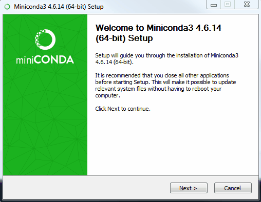

How to install Anaconda/Miniconda when group policy restricts where you run executables or batch files.
This is intended for a specific audience. If you are not sure whether these instructions apply to you (i.e. you arrived here from Google), then I suggest you do not follow them. Follow the official Anaconda/Miniconda/conda documentation instead.
Identify a location where you can run executables and/or batch files. For this example I will call this
location c:\devapps.
I believe you can use this path with needing to contact the Helpdesk.
Create these folders if they don't already exist:
c:\devapps c:\devapps\temp c:\devapps\python c:\devapps\python\setup
Download these files into these locations:
c:\devapps\init.cmd c:\devapps\install_hook.bat
Download the version of Anaconda/Miniconda you wish to install from the Anaconda archive or Miniconda archive, and place it in the c:\devapps\python\setup folder, e.g.:
c:\devapps\python\setup\Miniconda3-latest-Windows-x86_64.exe
Install Anaconda/Miniconda. To do this open Command Prompt from the start menu and run:
start /wait "" c:\devapps\python\setup\Miniconda3-latest-Windows-x86_64.exe
You will need to change the default location to which it installs. It defaults to something under c:\users. E.g. for this example we would change it to:
c:\devapps\python\miniconda3

c:\devapps)Open c:\devapps\install_hook.bat in Notepad and edit the contents so that it points to the correct location for you:
reg add "HKCU\Software\Microsoft\Command Processor" /v AutoRun ^
/t REG_EXPAND_SZ /d "c:\devapps\init.cmd" /f
Open c:\devapps\init.cmd and edit it in the same way to match the paths you are using:
@echo "Custom AutoRun is executing this file:" @echo %0 @SET CUSTOM_PATH=^ c:\devapps\python\miniconda3;^ c:\devapps\python\miniconda3\Library\mingw-w64\bin;^ c:\devapps\python\miniconda3\Library\usr\bin;^ c:\devapps\python\miniconda3\Library\bin;^ c:\devapps\python\miniconda3\Scripts @SET PATH=%CUSTOM_PATH%;%PATH% @SET TEMP=c:\devapps\temp
Run c:\devapps\install_hook.bat
Now run Command Prompt from the Start Menu. You should see this output:
Copyright (c) 2009 Microsoft Corporation. All rights reserved.
"Custom AutoRun is executing this file:"
c:\devapps\init.cmd
>
Every time cmd.exe is run, your init.cmd batch file will run, which will ensure the TEMP and PATH environment variables are correctly modified (overriding any system environment variable settings, which you may not be able to change).
If you want to check, you can try running the command conda info. You should get something like this, with the important parts highlighted:
C:\Users\kinverarity>conda info
active environment : None
user config file : C:\Users\kinverarity\.condarc
populated config files : C:\Users\kinverarity\.condarc
conda version : 4.6.14
conda-build version : not installed
python version : 3.7.3.final.0
base environment : c:\devapps\python\miniconda3 (writable)
channel URLs : https://conda.anaconda.org/kinverarity/win-64
https://conda.anaconda.org/kinverarity/noarch
https://conda.anaconda.org/conda-forge/win-64
https://conda.anaconda.org/conda-forge/noarch
https://repo.anaconda.com/pkgs/main/win-64
https://repo.anaconda.com/pkgs/main/noarch
https://repo.anaconda.com/pkgs/free/win-64
https://repo.anaconda.com/pkgs/free/noarch
https://repo.anaconda.com/pkgs/r/win-64
https://repo.anaconda.com/pkgs/r/noarch
https://repo.anaconda.com/pkgs/msys2/win-64
https://repo.anaconda.com/pkgs/msys2/noarch
package cache : c:\devapps\python\miniconda3\pkgs
C:\Users\kinverarity\.conda\pkgs
C:\Users\kinverarity\AppData\Local\conda\conda\pkgs
envs directories : c:\devapps\python\miniconda3\envs
C:\Users\kinverarity\.conda\envs
C:\Users\kinverarity\AppData\Local\conda\conda\envs
platform : win-64
user-agent : conda/4.6.14 requests/2.21.0 CPython/3.7.3 Windows/7 Windows/6.1.7601
administrator : False
netrc file : None
offline mode : False
And now things like conda activate base will work fine.
Everything works the same for Anaconda, including the nifty Anaconda Navigator GUI and all that.